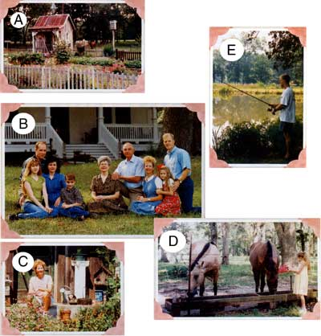
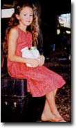
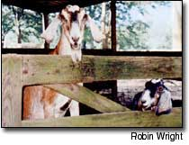
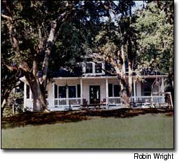

Back To Land Louisiana
My extended family bought 50 acres together, and we've discovered the many joys of country life.
By Robin Wright
April/May 2004
My extended family bought 50 acres together, and we've discovered the many joys of country life.
That rooster was dead. I was still shaking, I was so mad! Instinctively protecting his hens, 'Ole Roost' had spurred the once too often, and I decided it was time to call in the hatchet man. A few minutes later, Dad came driving up on his four-wheeler, hatchet and fishing net in hand. It wasn't pleasant, but the job was over quickly. When my clad handed me the headless villain, the look of shock on my face made him smile as he said, "Remember, you're the one that wants to live off the land."
Yes, it was true. For years I had talked with my parents anti my sister about all of us buying land in the country, building houses, growing gardens, hunting and fishing, and being able to help each oth er. Now, as I stood watching my father drive away, bloody bird in hand, I realized I was living my dream - the good, the bad and the ugly.
PUT UP OR SHUT UP
I'll never forget the day my dad and brother-in-law walked into my office with serious faces, closed the door as if there was a problem to discuss and sat down in the chairs opposite my desk. We all worked together in a building-supply business in Baton Rouge, Louisiana.
"Put up or shut up," they said. And, as both men grinned at me, it began to sink in that this was good news. "We've found the perfect piece of property, only 30 minutes from the office," they told me. "Fifty acres of fenced pastures stocked ponds, a nice house, two barns and two beautiful homesites."
It was an easy decision. The property was so perfect that we could hardly wait to move. Within a matter of days the purchase agreements were signed, and moving plans began to take shape. My parents would move into the existing house, and my sister and I would each build a new house on the property.
My husband, Ricky, and I sold our house quickly and bought a trailer to live in while building our new home. After settling into the trailer, we began buying old building materials with the goal of building a new house that truly looked old.
It took us two years to finally move into our new home, which is about 2,800 square feet in size and constructed of many recycled materials. We used antique pine and cypress lumber, oak flooring, antique light fixtures and claw-foot tubs - anything we could get our hands on from old buildings that had been torn down. We love being able to reuse things instead of throwing them away, but we also just love old houses. The wood in our house isn't flimsy or full of formaldehyde; we wanted those big, thick pieces.
When we made the move to the country, I decided I wanted to spend more time at home, enjoying our new lifestyle. For 20 years I had worked in the family business, but now I wanted to home school my daughter, Danielle, who was 4 years old at the time, so I retired from my job to become my daughter's teacher. I could also study the art of slowing down.
GOOD GARDENING
Gardening has been the best part of living this lifestyle. My dad has a beautiful garden and orchard next door. We keep separate gardens, but we help each other out when one of us leaves town. Dad has taught me all about gardening, but he's not organic: I learned that style of gardening from reading many organic gardening books and magazines. (Mother Earth News has been such an inspiration.) I've learned about Mulch piles, natural ways to combat insects and how to grow herbs, flowers and vegetables together in my garden.
I spend as much time as possible out mixing compost teas, handpicking slugs and stink bugs, and doing all the other chores involved with raising a healthy garden. This is my fourth year of gardening and it gets easier each year.
Making Milking Easier
My small family of three can only use 2 gallons of goat milk a week, but each nanny goat gives almost a gallon a day. So, I began looking for ways to use the excess and to solve other milking problems, too.
First, milking twice a day gets old. Second, we like to travel, and I hate to ask someone to come and milk for me. By Thanksgiving every year, I have to dry up my goats because the whole family goes out of town, leaving me without any help. My pregnant nannies need some time off, too, but I miss fresh milk for those three months.
Sometimes, though, good things come out of bad situations. When my best nanny became sick and miscarried, I gave her several months to regain her health before breeding her again. She became pregnant in January, and that put my two goats on different schedules, because the other nanny had been bred in September. That nanny gave birth in February, and when one of her twins died, I milked one side and her surviving baby nursed the other side. I didn't mind sharing the extra milk in return for a healthy kid. Eventually the kid discovered the other side, so when we planned to milk, we started penning him up the previous night. Suddenly, I could choose when I wanted to milk, and we could travel and come back without disturbing the milk supply just by leaving the kid with his mother. In June, the second nanny gave birth. When those kids were 2 months old, I dried up the other nanny, and when I wanted milk, I separated the new mother from her babies overnight. Now I only milk two or three times a week: I just have to breed one goat in September, and the other in January. Following this pattern appears to have solved the problem of too much milk, too much time milking, and the need for backup milkers. Time wilt tell!
I located The Ruth Stout No-work Garden Book after reading about her system of heavy mulching to keep clown weeds and hold the moisture in the soil. Last spring, I decided to use her planting method: no hoeing, no weeding, no turning the soil, no backbreaking work. Sounded good to me! My harvest was wonderful with very little weeding and a lot less watering. (For more about this gardening method, see "Ruth Stout's System," February/March 2004.)
BARNYARD CREATURES
Soon after moving to the country we started collecting animals. One day I passed a sign on the road that caught my attention: "Chickens for sale." After asking the lady many questions about her fowl, I purchased a few Rhode Island Red hens and 'Ole Roost.' He intimidated me immediately, and I started carrying a big stick whenever I entered his domain. When I later discovered that Rhode Island Reds are poor setters, and not likely to raise chicks for us, I was happy to learn that I didn't need a rooster at all! The hens gave us plenty of eggs without him.
Goats came next. A friend invited me to a small seminar about milk goats. We tasted fresh butter and delicious milk, then had the opportunity to try milking. I bought a Nubian doe on the spot, and I couldn't wait to make my own yogurt and cheese.
As it turned out, Sissy, my new goat "friend," was used to having other goats around and did not like being penned up with chickens. Her goal in life was to get out of confinement, and find me. After doing some reading, I learned that goats are herd animals, so we bought a second Nubian doe, named Mean Betsy. Betsy was a kicker, and it took two people to milk her for the first three days. She has become my favorite goat now that we have an understanding, but she's still mean.
Surprisingly, goat manure will not burn plants, even when fresh, so I use it in preparation for sowing and as a fertilizer throughout the year.
I had my first experience delivering baby goats last year. They were positioned wrong and could not be birthed without help. After several frantic phone calls, I realized there was nothing to do but roll up my sleeves and go in to save the young doe and her twins. It wasn't easy or fun, but experience is a great teacher.
Soon after, Danielle came to me in tears and told me one of the twins had died. She is learning about life and death, and that we don't always get our way. Nature will take its own course.
A GREAT LIFE
My sister and brother-in-law are still in the planning stages of building their house, but they live only 15 minutes away and frequently come to visit. We often keep each other's children, which is a real advantage. Between my mom and my sister, I never need a sitter. Our family shares everything - meat, vegetables and fish. We hunt deer in the woods behind our property, so venison is plentiful. My dad is an avid hunter - we get a lot of our meat from him, plus I hunt a few times a year, too.
We've added to our array of livestock, so I rarely buy any meat. In addition to chickens we raise rabbits and ducks, and bass and bream in our ponds. Last year, we butchered a young goat and were surprised it tasted so good. When you have fresh eggs, fresh milk, a freezer full of meat, and whatever is being harvested from the garden and the orchard, it's amazing how long you can go without grocery shopping.
Living our country life has been a dream come true. The peace and quiet is only interrupted by the geese honking or the horses neighing across the pasture to each other. "Put up or shut up," my brother-in-law had challenged. I'm so glad we "put up."
Mother Earth News
 Ricky Wright A: Robins garden in full bloom. B: from left Rebekah, Steve, Donna and Joel Phillips Janette and Albert Greene; Robin, Danielle and Ricky Wright. C:Robin in her organic garden. D:Danielle feeds the horses, Missy and Copper E: Ricky fishes for Bass |
 Mean Betsy and her daughter Jewel rule the barn. |
 Danielle helps with the milking. |
|
 Choosing a building site with mature trees helped give the Wrights' beautiful new home the appearance of a stately, older farm home that had been updated. |
 |
|